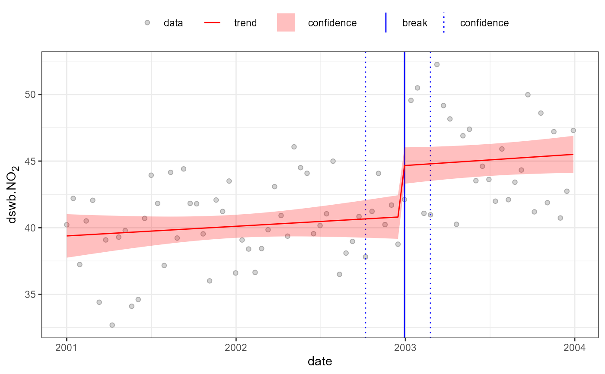

Environmental time-series signal processing: Contribution isolation based on background subtraction, deseasonalisation and/or deweathering.
Usage
isolateContribution(
data,
pollutant,
background = NULL,
deseason = TRUE,
deweather = TRUE,
method = 2,
add.term = NULL,
formula = NULL,
use.bam = FALSE,
output = "mean",
...
)Arguments
- data
Data source, typically
data.frame(or similar), containing all time-series to be used when applying signal processing.- pollutant
The column name of the
datatime-series to be signal processed.- background
(optional) if supplied, the background time-series to use as a background correction. See below.
- deseason
logical or character vector, if
TRUE(default), thepollutantis deseasonalised usingday.hourandyear.dayfrequency terms, all calculate from thedatatime stamp, assumed to bedateindata. Other options:FALSEto turn off deseasonalisation; or a character vector of frequency terms if user-defining. See below.- deweather
logical or character vector, if
TRUE(default), the data is deweathered using wind speed and direction, assumed to bewsandwdindata). Other options:FALSEto turn off deweathering; or a character vector ofdatacolumn names if user-defining. See below.- method
numeric, contribution isolation method (default 2). See Note.
- add.term
extra terms to add to the contribution isolation model; ignore for now (in development).
- formula
(optional) Signal isolate model formula; this allows user to set the signal isolation model formula directly, but means function arguments
background,deseasonanddeweatherwill be ignored.- use.bam
(logical) If TRUE, the
bamis used instead of standardgamto build the model.- output
output options; currently,
'mean','model', and'all'; but please note these are in development and may be subject to change.- ...
other arguments; ignore for now (in development)
Value
isolateContribution returns a vector of
predictions of the pollutant time-series after
the requested signal isolation.
Details
isolateContribution estimates and
subtracts pollutant variance associated with
factors that may hinder break-point/segment analysis:
Background Correction If applied, this fits the supplied
backgroundtime-series as a spline term:s(background).Seasonality If applied, this fits regular frequency terms, e.g.
day.hour,year.day, as spline terms, default TRUE is equivalent tos(day.hour)ands(year.day). All terms are calculated fromdatecolumn indata.Weather If applied, this fits time-series of identified meteorological measurements, e.g. wind speed and direction (
wsandwdindata). If bothwsandwdare present these are fitted as a tensor termte(ws, wd). Otherdeweathering terms, if included, are fitted as spline terms(term). The defaultTRUEis equivalent tote(ws, wd).
Using the supplied arguments, it builds a signal
(mgcv) GAM model, calculates,
and returns the mean-centred residuals as an
estimate of the isolated local contribution.
Note
method was included as part of method
development and testing work, and retained for now.
Please ignore for now.
References
Regarding mgcv GAM fitting methods, see
Wood (2017) for general introduction and package
documentation regarding coding (mgcv):
Wood, S.N. (2017) Generalized Additive Models: an introduction with R (2nd edition), Chapman and Hall/CRC.
Regarding isolateContribution, see:
Ropkins, K., Walker, A., Philips, I., Rushton, C., Clark, T. and Tate, J., Change Detection of Air Quality Time-Series Using the R Package AEQval. Available at SSRN 4267722. https://ssrn.com/abstract=4267722 or http://dx.doi.org/10.2139/ssrn.4267722 Also at: https://karlropkins.github.io/AQEval/articles/AQEval_Intro_Preprint.pdf
See also
Regarding seasonal terms and frequency
analysis, see also stl and
spectralFrequency.
Examples
#fitting a simple deseasonalisation, deweathering
#and background correction (dswb) model to no2:
aq.data$dswb.no2 <- isolateContribution(aq.data,
"no2", background="bg.no2")
#> no2 ~ s(bg.no2) + te(wd, ws) + s(year.day) + s(day.hour)
#compare at 14 day resolution:
temp <- openair::timeAverage(aq.data, "14 day")
#without dswb
quantBreakPoints(temp, "no2", test=FALSE, h=0.1)
#> Using all 6 suggested breaks
#>
#> 2001-03-26 (2001-02-26 to 2001-07-02)
#> 49.03->33.34;-15.69 (-32%)
#>
#> 2001-09-24 (2001-09-10 to 2001-10-22)
#> 34.57->48.63;14.05 (41%)
#>
#> 2001-12-31 (2001-11-19 to 2002-01-14)
#> 49.35->35.78;-13.57 (-27%)
#>
#> 2002-09-09 (2002-07-29 to 2002-11-04)
#> 37.53->46.77;9.234 (25%)
#>
#> 2003-04-07 (2003-03-10 to 2003-05-05)
#> 48.36->34.63;-13.73 (-28%)
#>
#> 2003-08-11 (2003-07-14 to 2003-08-25)
#> 35.41->47.95;12.54 (35%)
#with dswb
quantBreakPoints(temp, "dswb.no2", test=FALSE, h=0.1)
#> Using all 1 suggested breaks
#>
#> 2002-12-30 (2002-10-07 to 2003-02-24)
#> 40.8->44.67;3.865 (9.5%)
